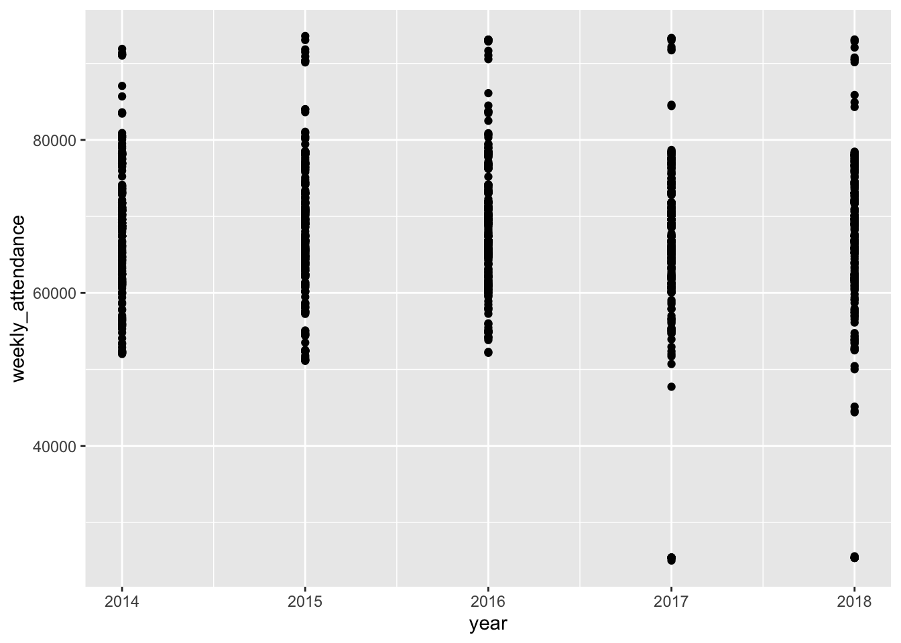
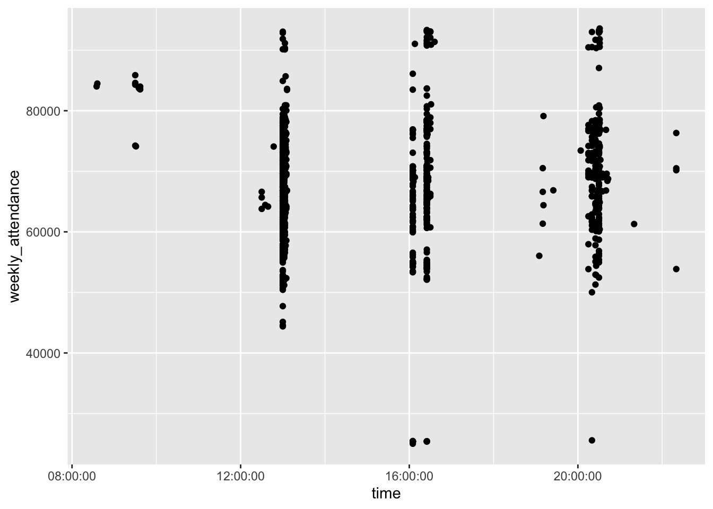
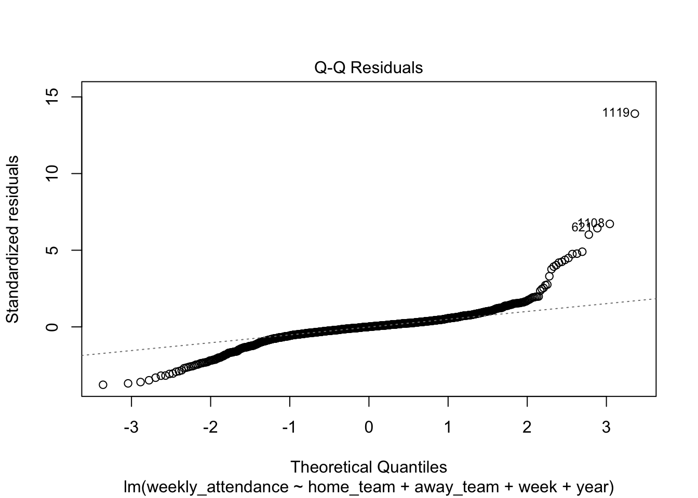
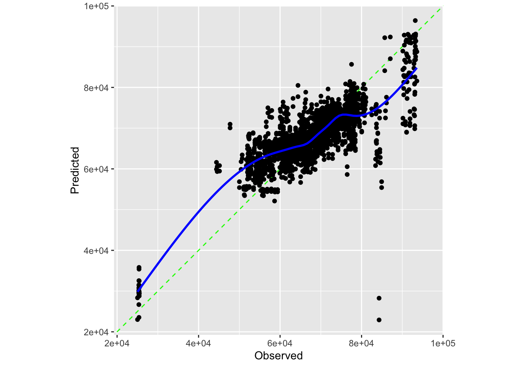

library(readr)
library(stringr)
library(dplyr)
library(ggplot2)
library(naniar)
library(workflows)
library(workflowsets)
library(tune)
library(recipes)
library(kknn)
library(rsample)
library(parsnip)
library(tidyr)
library(tidymodels)
library(probably)
library(vip)
library(xgboost)NFL Attendance
Motivation and Context
This section describes what you are investigating in your project and why you are investigating it. You should provide enough contextual background and information that someone with a limited background can understand the broad outlines of the topic being investigated.
I am investigating attendance at NFL games because it is interesting to delve into the many factors that play into why a person would go to a stadium rather than simply watch from home. The time of day, date, loyalty to a team, cost, and rivalries may all play a role. There are also other monetary reasons one should consider investigating future attendance. For instance, given a predicted increase, which isn’t possible due to stadium limitations, renovating stadiums for additional seats may become a priority. In addition, there are dynamic reasons, such as ticket prices and the number of staff, which can change depending on predicted attendance.
The background to understand NFL game attendance is the locations of stadiums and the popularity of teams. While how the game is played is interesting, it isn’t vital to the analysis as long as we know that higher scores are better. There is, however, a simple rating system where 0 is an average team, with above zero being better and below being worse, used to measure the quality of the teams’ offense, defense, and opponents. There is also a bye week for each team where they don’t play, and the data uses the outdated sixteen-game season with eight played at home and the other eight played away. Lastly, changes in team names and locations are important to consider.
Main Objective
The main objective of this project is to predict what the attendance per game would have been in the 2020 season if there wasn’t a COVID-19 restriction.
Packages Used In This Analysis
| Package | Use |
|---|---|
| [readr] | read in csv |
| [stringr] | Separate strings into new rows by commas |
| [dplyr] | In order to join data |
| [ggplot2] | To plot data |
| [naniar] | To plot and use missing data |
| [workflows] | To make tidy models |
| [workflowsets] | Also to make tidy models |
| [tune] | To cross validate |
| [recipes] | To build recipes for tidy model |
| [kknn] | To build knn models |
| [rsample] | For building cross validation data |
| [parsnip] | For building knn too |
| [tidyr] | To drop na values and adjust data |
| [tidymodels] | To make grids and other modeling |
| [probably] | To calibrate knn model |
| [vip] | For variable importance plot |
| [xgboost] | For boosted trees |
…
Data Description
I am using data on attendance, scores, and other metrics for football teams’ games from 2000 to 2019. It is from a Tidy Tuesday from 02/04/2020, which is a community that posts weekly projects. The data is collected from Pro Football Reference, which I am also using, and it was most likely collected through nfl.com as there is a gamebook that states the attendance as the data matches it. It also states the stadiums that would be useful to scrape, and the dates and times are also most likely collected from them. The game book states that paid attendance is probably collected based on how many tickets are used to enter the stadium. I have looked at and downloaded some stadiums and data for 2020; however, the data wrangling required exceeds the time remaining to complete the project.
Tidy Tuesday https://github.com/rfordatascience/tidytuesday/tree/main/data/2020/2020-02-04
Pro Football Reference https://www.pro-football-reference.com/
NFL Website https://www.nfl.com/
attendance <- readr::read_csv('https://raw.githubusercontent.com/rfordatascience/tidytuesday/main/data/2020/2020-02-04/attendance.csv')
standings <- readr::read_csv('https://raw.githubusercontent.com/rfordatascience/tidytuesday/main/data/2020/2020-02-04/standings.csv')
games <- readr::read_csv('https://raw.githubusercontent.com/rfordatascience/tidytuesday/main/data/2020/2020-02-04/games.csv')Data Limitations
There are many limitations, such as there not being recorded stadiums, stadium capacity, and the size of the city. There may also be bias in the way that attendance is recorded to make the league seem to have a better performance or for headlines. The methodology that follows also may not be applicable to other sports as the number of games may be vital to whether people attend a game, whether due to fatigue from too many games or better opportunities; however, due to similarities, college football may be applicable. In addition, preseason and playoff data aren’t included; however, the methodology that follows may be applicable to them.
Data Wrangling
I am combining my datasets into one for prediction and making weeks into a categorical variable since they aren’t increasing linearly and it accounts for how one week may be higher than another week due to holidays or etc.
attendance$newteam <- str_c(attendance$team, attendance$team_name, sep = " ", collapse = NULL)
standings$newteam <- str_c(standings$team, standings$team_name, sep = " ", collapse = NULL)
games$week <- as.numeric(games$week)Warning: NAs introduced by coerciongames <- games %>%
drop_na(week)
data <- games %>%
left_join(attendance, by = c("home_team" = "newteam", "year", "week"))
data <- data %>%
left_join(standings, by = c("home_team" = "newteam", "year", "team", "team_name"))I am filtering the data to only include the last 5 years since the NFL changes at a fast pace. In addition, I tested including more data and it made the predictions worse.
data_train <- data %>%
filter(year != 2019 & year > 2013)
data_test <- data %>%
filter(year == 2019)
data_train$week <- as.factor(data_train$week)
data_test$week <- as.factor(data_test$week)Exploratory Data Analysis
attendance %>%
miss_var_summary()# A tibble: 9 × 3
variable n_miss pct_miss
<chr> <int> <num>
1 weekly_attendance 638 5.88
2 team 0 0
3 team_name 0 0
4 year 0 0
5 total 0 0
6 home 0 0
7 away 0 0
8 week 0 0
9 newteam 0 0 count(attendance)/638 n
1 17This corresponds one-to-one to the fact that each team is given one week of the seventeen-week season as a bye week.
data_train %>%
summarize(
number = n(),
weekly_attendance_mean = mean(weekly_attendance, na.rm = TRUE),
weekly_attendance_sd = sd(weekly_attendance, na.rm = TRUE),
weekly_attendance_min = min(weekly_attendance, na.rm = TRUE),
weekly_attendance_q1 = quantile(weekly_attendance, 0.25, na.rm = TRUE),
weekly_attendance_median = median(weekly_attendance, na.rm = TRUE),
weekly_attendance_q3 = quantile(weekly_attendance, 0.75, na.rm = TRUE),
weekly_attendance_max = max(weekly_attendance, na.rm = TRUE)
)# A tibble: 1 × 8
number weekly_attendance_mean weekly_attendance_sd weekly_attendance_min
<int> <dbl> <dbl> <dbl>
1 1280 68231. 9508. 25015
# ℹ 4 more variables: weekly_attendance_q1 <dbl>,
# weekly_attendance_median <dbl>, weekly_attendance_q3 <dbl>,
# weekly_attendance_max <dbl>ggplot(data = data_train,
mapping = aes(x = weekly_attendance)
) +
geom_histogram(center = 57500,
binwidth = 5000)
ggplot(data = data_train,
mapping = aes(y = weekly_attendance)
) +
geom_boxplot()
Through the table, we can get the total number of values, mean, standard deviation, minimum, median, maximum, and the value at the \(25\%\) and \(75%\) of attendance in training data. Through the exact values, we notice that attendance is centered between 63,000 and 73,000 people. In addition, all the values are plausible, as there are no recorded negative or exceedingly high values. The histogram shows no large breaks between different recorded attendances, but as the values get more extreme, there are fewer recorded games with such attendance. The boxplot shows a large number of outliers.
data_train %>%
group_by(home_team) %>%
count()# A tibble: 34 × 2
# Groups: home_team [34]
home_team n
<chr> <int>
1 Arizona Cardinals 40
2 Atlanta Falcons 40
3 Baltimore Ravens 40
4 Buffalo Bills 40
5 Carolina Panthers 40
6 Chicago Bears 40
7 Cincinnati Bengals 40
8 Cleveland Browns 40
9 Dallas Cowboys 40
10 Denver Broncos 40
# ℹ 24 more rowsdata_train %>%
group_by(home_team) %>%
summarize(
number = n(),
weekly_attendance_mean = mean(weekly_attendance, na.rm = TRUE),
weekly_attendance_sd = sd(weekly_attendance, na.rm = TRUE),
weekly_attendance_min = min(weekly_attendance, na.rm = TRUE),
weekly_attendance_q1 = quantile(weekly_attendance, 0.25, na.rm = TRUE),
weekly_attendance_median = median(weekly_attendance, na.rm = TRUE),
weekly_attendance_q3 = quantile(weekly_attendance, 0.75, na.rm = TRUE),
weekly_attendance_max = max(weekly_attendance, na.rm = TRUE)
)# A tibble: 34 × 9
home_team number weekly_attendance_mean weekly_attendance_sd
<chr> <int> <dbl> <dbl>
1 Arizona Cardinals 40 63446. 1348.
2 Atlanta Falcons 40 71469. 2394.
3 Baltimore Ravens 40 70834. 360.
4 Buffalo Bills 40 67530. 3860.
5 Carolina Panthers 40 73770. 628.
6 Chicago Bears 40 61289. 1134.
7 Cincinnati Bengals 40 57920. 7400.
8 Cleveland Browns 40 65514. 3799.
9 Dallas Cowboys 40 91682. 1650.
10 Denver Broncos 40 76688. 377.
# ℹ 24 more rows
# ℹ 5 more variables: weekly_attendance_min <dbl>, weekly_attendance_q1 <dbl>,
# weekly_attendance_median <dbl>, weekly_attendance_q3 <dbl>,
# weekly_attendance_max <dbl>ggplot(data = data_train,
mapping = aes(
x = home_team,
y = weekly_attendance
)
) +
geom_boxplot() +
theme(axis.text.x = element_text(angle = 90, vjust = 0.5, hjust=1))ggplot(data = data_train,
mapping = aes(
x = away_team,
y = weekly_attendance
)
) +
geom_boxplot() +
theme(axis.text.x = element_text(angle = 90, vjust = 0.5, hjust=1))The table above displays the number of games recorded for each home_team as we want to see how many teams are recorded in our data and the names, as there have been teams in the NFL that have changed names. In addition, we can see that there are 40 games recorded for each team, except the Chargers, Rams, and Texans. However, the Chargers and Rams have theirs split into different teams in 2017 and 2016, respectively.
Through our next table, we can get the total number of values, mean, standard deviation, minimum, median, maximum, and the value at the \(25\%\) and \(75%\) of attendance broken into teams in our training data. The table provides exact values, so we can see the extreme values from the following box plot. In the box plot, we can see different teams of varying centers and distributions. In addition, we can see that the Los Angeles Chargers has a single extremely large attendance record, which is 84301 people. It can also be seen that the Dallas Cowboys almost always have extremely high attendance compared to other teams. Therefore, due to the differences between teams, home_team is likely a significant predictor for weekly_attendance. The same can be said for away team as well but it is significantly less severe.
ggplot(data = data_train,
mapping = aes(
x = year,
y = weekly_attendance
)
) +
geom_boxplot()Warning: Continuous x aesthetic
ℹ did you forget `aes(group = ...)`?
ggplot(data = data_train,
mapping = aes(
x = day,
y = weekly_attendance
)
) +
geom_boxplot()
ggplot(data = data_train,
mapping = aes(
x = week,
y = weekly_attendance
)
) +
geom_boxplot()
ggplot(data = data_train,
mapping = aes(
x = simple_rating,
y = weekly_attendance
)
) +
geom_point()
ggplot(data = data_train,
mapping = aes(
x = time,
y = weekly_attendance
)
) +
geom_point()
The above plots show that attendance doesn’t change significantly based on the simple rating, day, week, or year the game is played; however, it is impacted by time, but since there are different time zones, it doesn’t make much sense to use.
Modeling
I am performing a k-nearest neighbors as assumptions for linear regression has failed the condition of equal variance. K-nearest-neighbors is non-parametric so it has looser conditions and works by using the training set to identify the k points closest to the point we want to predict. Then an average is taken in order to make our prediction.
I am using the home_team and away_team in my prediction as they can catch information not in variables in my dataset such stadium and team strength. I am also using week and year as I feel they can be used to show the changes in time, but year is numerical as it isn’t in the testing set otherwise.
lm1 <- lm(weekly_attendance ~ home_team + away_team + week + year, data = data_train)
summary(lm1)
Call:
lm(formula = weekly_attendance ~ home_team + away_team + week +
year, data = data_train)
Residuals:
Min 1Q Median 3Q Max
-15050 -1436 31 1330 54855
Coefficients:
Estimate Std. Error t value Pr(>|t|)
(Intercept) 705281.18 173916.65 4.055 5.33e-05 ***
home_teamAtlanta Falcons 8152.51 955.15 8.535 < 2e-16 ***
home_teamBaltimore Ravens 7592.87 959.55 7.913 5.69e-15 ***
home_teamBuffalo Bills 4241.76 958.92 4.423 1.06e-05 ***
home_teamCarolina Panthers 10400.43 954.29 10.899 < 2e-16 ***
home_teamChicago Bears -2232.02 945.79 -2.360 0.018437 *
home_teamCincinnati Bengals -5297.93 961.92 -5.508 4.45e-08 ***
home_teamCleveland Browns 2133.03 960.21 2.221 0.026509 *
home_teamDallas Cowboys 28324.36 949.87 29.819 < 2e-16 ***
home_teamDenver Broncos 13513.67 960.23 14.073 < 2e-16 ***
home_teamDetroit Lions -1019.16 952.83 -1.070 0.285011
home_teamGreen Bay Packers 14713.16 949.29 15.499 < 2e-16 ***
home_teamHouston Texans 8770.89 958.80 9.148 < 2e-16 ***
home_teamIndianapolis Colts 712.47 958.91 0.743 0.457631
home_teamJacksonville Jaguars 2429.78 958.03 2.536 0.011332 *
home_teamKansas City Chiefs 11432.43 954.09 11.983 < 2e-16 ***
home_teamLos Angeles Chargers -33675.64 1259.44 -26.739 < 2e-16 ***
home_teamLos Angeles Rams 9842.93 1095.07 8.988 < 2e-16 ***
home_teamMiami Dolphins 3774.36 958.43 3.938 8.69e-05 ***
home_teamMinnesota Vikings -2423.09 951.66 -2.546 0.011016 *
home_teamNew England Patriots 3541.34 959.15 3.692 0.000232 ***
home_teamNew Orleans Saints 9945.95 952.92 10.437 < 2e-16 ***
home_teamNew York Giants 14644.32 951.33 15.394 < 2e-16 ***
home_teamNew York Jets 14567.60 958.32 15.201 < 2e-16 ***
home_teamOakland Raiders -6070.22 958.26 -6.335 3.36e-10 ***
home_teamPhiladelphia Eagles 6201.30 951.66 6.516 1.06e-10 ***
home_teamPittsburgh Steelers 89.47 963.67 0.093 0.926042
home_teamSan Diego Chargers -633.91 1103.12 -0.575 0.565634
home_teamSan Francisco 49ers 6704.47 944.45 7.099 2.15e-12 ***
home_teamSeattle Seahawks 5604.60 947.34 5.916 4.30e-09 ***
home_teamSt. Louis Rams -9523.83 1250.95 -7.613 5.40e-14 ***
home_teamTampa Bay Buccaneers -4069.88 952.96 -4.271 2.10e-05 ***
home_teamTennessee Titans 2330.32 959.38 2.429 0.015288 *
home_teamWashington Redskins 10079.34 952.02 10.587 < 2e-16 ***
away_teamAtlanta Falcons -481.46 955.17 -0.504 0.614316
away_teamBaltimore Ravens 19.45 959.53 0.020 0.983830
away_teamBuffalo Bills 459.50 958.47 0.479 0.631736
away_teamCarolina Panthers -408.98 952.70 -0.429 0.667789
away_teamChicago Bears 654.15 948.50 0.690 0.490538
away_teamCincinnati Bengals 24.37 960.37 0.025 0.979764
away_teamCleveland Browns -666.85 958.72 -0.696 0.486838
away_teamDallas Cowboys 2189.36 947.87 2.310 0.021070 *
away_teamDenver Broncos 421.96 959.78 0.440 0.660272
away_teamDetroit Lions 136.98 954.96 0.143 0.885969
away_teamGreen Bay Packers 470.78 947.21 0.497 0.619265
away_teamHouston Texans -1061.95 958.66 -1.108 0.268196
away_teamIndianapolis Colts -601.80 960.70 -0.626 0.531156
away_teamJacksonville Jaguars -1068.49 960.15 -1.113 0.266003
away_teamKansas City Chiefs -694.88 955.52 -0.727 0.467226
away_teamLos Angeles Chargers -228.47 1258.00 -0.182 0.855914
away_teamLos Angeles Rams -694.25 1096.35 -0.633 0.526698
away_teamMiami Dolphins 378.06 958.75 0.394 0.693415
away_teamMinnesota Vikings 465.99 950.13 0.490 0.623905
away_teamNew England Patriots 1813.93 957.72 1.894 0.058465 .
away_teamNew Orleans Saints 460.40 954.55 0.482 0.629668
away_teamNew York Giants 557.26 950.99 0.586 0.558001
away_teamNew York Jets -284.01 957.95 -0.296 0.766921
away_teamOakland Raiders -161.43 960.23 -0.168 0.866518
away_teamPhiladelphia Eagles 617.00 951.66 0.648 0.516893
away_teamPittsburgh Steelers 1606.96 962.32 1.670 0.095204 .
away_teamSan Diego Chargers -1586.09 1104.44 -1.436 0.151235
away_teamSan Francisco 49ers 208.08 942.17 0.221 0.825243
away_teamSeattle Seahawks 1603.90 945.64 1.696 0.090127 .
away_teamSt. Louis Rams -558.97 1253.68 -0.446 0.655778
away_teamTampa Bay Buccaneers -546.87 952.74 -0.574 0.566079
away_teamTennessee Titans -193.89 959.37 -0.202 0.839875
away_teamWashington Redskins -490.36 951.50 -0.515 0.606401
week2 -701.37 672.85 -1.042 0.297442
week3 -101.89 669.28 -0.152 0.879022
week4 1003.69 679.05 1.478 0.139647
week5 193.57 686.93 0.282 0.778152
week6 -268.27 683.42 -0.393 0.694725
week7 623.64 682.77 0.913 0.361215
week8 1064.13 696.86 1.527 0.127017
week9 204.50 709.97 0.288 0.773362
week10 -109.30 696.50 -0.157 0.875327
week11 560.72 695.37 0.806 0.420198
week12 -1025.05 669.28 -1.532 0.125894
week13 -1063.78 670.99 -1.585 0.113142
week14 -1049.42 667.86 -1.571 0.116373
week15 91.93 669.91 0.137 0.890873
week16 -741.63 665.52 -1.114 0.265342
week17 -306.73 668.59 -0.459 0.646478
year -318.43 86.27 -3.691 0.000233 ***
---
Signif. codes: 0 '***' 0.001 '**' 0.01 '*' 0.05 '.' 0.1 ' ' 1
Residual standard error: 4156 on 1196 degrees of freedom
Multiple R-squared: 0.8213, Adjusted R-squared: 0.8089
F-statistic: 66.22 on 83 and 1196 DF, p-value: < 2.2e-16plot(lm1)

knn_recipe <- recipe(
weekly_attendance ~ home_team + away_team + week + year,
data = data_train
) |>
step_normalize(all_numeric_predictors()) |>
step_dummy(all_nominal_predictors(), one_hot = TRUE)
knn_model <- nearest_neighbor(mode = "regression",
engine = "kknn",
neighbors = tune(),
dist_power = 2)
knn_wflow <- workflow() |>
add_model(knn_model)
data_cv <- vfold_cv(data_train, v = 10)
knn.grid <- expand.grid(neighbors = seq(1,20, by = 1))
knn_wflow <- knn_wflow |>
add_recipe(knn_recipe)
knn_tune <- tune_grid(knn_model,
knn_recipe,
resamples = data_cv,
grid = knn.grid)
autoplot(knn_tune)
knn_best <- knn_tune |>
select_best(metric = "rmse")
knn_best# A tibble: 1 × 2
neighbors .config
<dbl> <chr>
1 17 Preprocessor1_Model17my_best_knn <- knn_wflow |>
finalize_workflow(parameters = knn_best)
my_best_knn══ Workflow ════════════════════════════════════════════════════════════════════
Preprocessor: Recipe
Model: nearest_neighbor()
── Preprocessor ────────────────────────────────────────────────────────────────
2 Recipe Steps
• step_normalize()
• step_dummy()
── Model ───────────────────────────────────────────────────────────────────────
K-Nearest Neighbor Model Specification (regression)
Main Arguments:
neighbors = 17
dist_power = 2
Computational engine: kknn I choose my best model based on the lowest root mean squared error, which we want to minimize as it is calculated as \(\sqrt{\frac{1}{n}\sum_{i=1}^n(y_i-\hat{f}(x_i))^2}\). This is the square root of one over the total number of observations times the sum over the observations of the actual values minus the predicted values squared. Therefore, when the root mean squared error is closer to 0, the actual values are closer to the predicted values.
xgboostR_model <- boost_tree(mode = "regression", engine = "xgboost",
trees = tune(), tree_depth = tune(),
learn_rate = tune())
xgboostR_recipe <- recipe(
weekly_attendance ~ home_team + away_team + week + year,, # response ~ predictors
data = data_train
) |>
step_dummy(all_nominal_predictors())
xgboostR_wflow <- workflow() |>
add_model(xgboostR_model) |>
add_recipe(xgboostR_recipe)
set.seed(1486)
xgboostR_tune <- tune_grid(xgboostR_model,
xgboostR_recipe,
resamples = data_cv,
metrics = metric_set(rmse),
grid = grid_space_filling(
trees(),
tree_depth(),
learn_rate(),
size = 3)) # search over 20 possible combinations of the three parameters - keep this small if you don't want it running forever
xgboostR_tune |>
collect_metrics() |>
filter(.metric == "rmse") |>
arrange(mean)# A tibble: 3 × 9
trees tree_depth learn_rate .metric .estimator mean n std_err .config
<int> <int> <dbl> <chr> <chr> <dbl> <int> <dbl> <chr>
1 2000 15 0.1 rmse standard 3802. 10 329. Preproc…
2 1 8 0.00000316 rmse standard 68887. 10 197. Preproc…
3 1000 1 0.0000000001 rmse standard 68887. 10 197. Preproc…xgboostR_best <- select_by_one_std_err(xgboostR_tune,
metric = "rmse",
tree_depth, trees, desc(learn_rate))
xgboostR_wflow_final <- finalize_workflow(xgboostR_wflow,
parameters = xgboostR_best)
xgboostR_fit <- fit(xgboostR_wflow_final, data = data_train)
xgboostR_predict <- augment(xgboostR_fit, new_data = data_test)
xgboostR_predict |>
dplyr::slice(1:10) # must use dplyr::slice because there is also a slice function in xgboost# A tibble: 10 × 38
.pred year week home_team away_team winner tie day date time pts_win
<dbl> <dbl> <fct> <chr> <chr> <chr> <chr> <chr> <chr> <tim> <dbl>
1 62248. 2019 1 Chicago … Green Ba… Green… <NA> Thu Sept… 20:20 10
2 63192. 2019 1 Clevelan… Tennesse… Tenne… <NA> Sun Sept… 13:00 43
3 66308. 2019 1 Minnesot… Atlanta … Minne… <NA> Sun Sept… 13:00 28
4 68999. 2019 1 Philadel… Washingt… Phila… <NA> Sun Sept… 13:00 32
5 73872. 2019 1 Carolina… Los Ange… Los A… <NA> Sun Sept… 13:00 30
6 78022. 2019 1 New York… Buffalo … Buffa… <NA> Sun Sept… 13:00 17
7 66992. 2019 1 Jacksonv… Kansas C… Kansa… <NA> Sun Sept… 13:00 40
8 65954. 2019 1 Miami Do… Baltimor… Balti… <NA> Sun Sept… 13:00 59
9 25750. 2019 1 Los Ange… Indianap… Los A… <NA> Sun Sept… 16:05 30
10 69457. 2019 1 Seattle … Cincinna… Seatt… <NA> Sun Sept… 16:05 21
# ℹ 27 more variables: pts_loss <dbl>, yds_win <dbl>, turnovers_win <dbl>,
# yds_loss <dbl>, turnovers_loss <dbl>, home_team_name <chr>,
# home_team_city <chr>, away_team_name <chr>, away_team_city <chr>,
# team <chr>, team_name <chr>, total <dbl>, home <dbl>, away <dbl>,
# weekly_attendance <dbl>, wins <dbl>, loss <dbl>, points_for <dbl>,
# points_against <dbl>, points_differential <dbl>, margin_of_victory <dbl>,
# strength_of_schedule <dbl>, simple_rating <dbl>, offensive_ranking <dbl>, …rmse(xgboostR_predict, truth = weekly_attendance, estimate = .pred)# A tibble: 1 × 3
.metric .estimator .estimate
<chr> <chr> <dbl>
1 rmse standard 5256.I am running a boosted tree here which works by trees being grown sequentially from previous trees formed thorugh a modified version of the dataset. They work by splitting trees into sections based on predictors until enough splits are made in order for the predictions to be accurate but splits are controlled so it doesn’t split until groups are one.
I am cross validating the same way as for knn but with the highest rmse within one standard deviation of the lowest.
Insights
best_model_refit <- my_best_knn |>
fit_resamples(
resamples = data_cv,
# save the cross-validated predictions
control = control_resamples(save_pred = TRUE)
)
predictions_best_model <- best_model_refit |>
collect_predictions()
cal_plot_regression(
predictions_best_model,
truth = weekly_attendance,
estimate = .pred
)
best_model_refit |>
cal_validate_linear(
save_pred = TRUE,
smooth = TRUE) |> # nonlinear smoothing, use smooth = FALSE for linear transformation
collect_predictions() |>
cal_plot_regression(
truth = weekly_attendance,
estimate = .pred
)
calibrate_knn <- predictions_best_model |>
# instructions for post-processing
cal_estimate_linear(
truth = weekly_attendance,
smooth = TRUE # nonlinear smoothing
)
knn_fit <- my_best_knn |> fit(
data = data_train
)
knn_test_pred2 <- knn_fit |>
augment(new_data = data_test) |>
# apply the post-processing
cal_apply(calibrate_knn)
clean <- knn_test_pred2
clean$difference <- (clean$.pred-clean$weekly_attendance)
clean %>%
sort_by(clean$difference)# A tibble: 256 × 40
.pred .resid year week home_team away_team winner tie day date time
<dbl> <dbl> <dbl> <fct> <chr> <chr> <chr> <chr> <chr> <chr> <tim>
1 37161. 49416. 2019 11 Los Angel… Kansas C… Kansa… <NA> Mon Nove… 20:15
2 64580. 19828. 2019 9 Jacksonvi… Houston … Houst… <NA> Sun Nove… 09:30
3 69758. 14101. 2019 8 Los Angel… Cincinna… Los A… <NA> Sun Octo… 13:00
4 77090. 14596. 2019 15 Dallas Co… Los Ange… Dalla… <NA> Sun Dece… 16:25
5 77922. 14737. 2019 10 Dallas Co… Minnesot… Minne… <NA> Sun Nove… 20:20
6 68658. 7464. 2019 5 Washingto… New Engl… New E… <NA> Sun Octo… 13:00
7 64261. 7425. 2019 1 Carolina … Los Ange… Los A… <NA> Sun Sept… 13:00
8 60637. 5421. 2019 12 Buffalo B… Denver B… Buffa… <NA> Sun Nove… 13:00
9 83848. 10994. 2019 13 Dallas Co… Buffalo … Buffa… <NA> Thu Nove… 16:30
10 65261. 5948. 2019 7 Atlanta F… Los Ange… Los A… <NA> Sun Octo… 13:00
# ℹ 246 more rows
# ℹ 29 more variables: pts_win <dbl>, pts_loss <dbl>, yds_win <dbl>,
# turnovers_win <dbl>, yds_loss <dbl>, turnovers_loss <dbl>,
# home_team_name <chr>, home_team_city <chr>, away_team_name <chr>,
# away_team_city <chr>, team <chr>, team_name <chr>, total <dbl>, home <dbl>,
# away <dbl>, weekly_attendance <dbl>, wins <dbl>, loss <dbl>,
# points_for <dbl>, points_against <dbl>, points_differential <dbl>, …Our test set of 2019 data shows that our model isn’t that great at predicting attendance, except for attendance between about 65,000 and 75,000. In addition, predictions get further from our observed when further from the middle value at about 70,000.
xgboostR_fit |> extract_fit_engine() |>
vip(scale = TRUE)plot(xgboostR_predict$.pred, xgboostR_predict$weekly_attendance) +
abline(0,1)integer(0)I also ran an importance plot on a boosted tree model. The highest importance is the LA Chargers most likely because there aren’t that many games recorded for them and they are getting significantly less attendance than the rest of the NFL. It is followed by the Dallas Cowboys probably because they have a higher attendance than the mean. The years show that it is the next most used in splitting the data.
The plot also shows that our predictions are closer to our actual values than the knn model.
Limitations and Future Work
The knn model is poorly predicting games with attendance that don’t fall between 60,000 and 80,000 attendants. This is likely due to a majority of values being there for use in k-nearest neighbors, while further values have less similar options. The data collection and analysis would be significantly improved if stadium data were readily available in a precleaned way. The boosted trees also performs better but it may be due to overfitting and shows the importance of stadiums as the teams were used significantly. In addition, rivalries between teams could be another indicator of attendance. Since I am using a non-parametric approach, the assumptions are satisfied. There are some ethical concerns, such as if there is a great prediction, then teams might hire fewer workers during low attendance games, and ticket prices might be raised on high attendance games.
Reflection
This project has made me appreciate the difficulty of working with online data and how many of the methods we learned in class have to examined and thought about before being applied to projects.
How did doing this project increase your understanding of statistical learning and/or the real-world domain you investigated? (It’s perfectly okay to say you learned nothing, in which case you should explain why.) This project made me understand the complexity of working with datasets collected by other people and how much bad data there is to work with. In the presentations, I listened to a common theme, synthetic data from Kaggle, and the main insight was a lack of connection. The project also granted me a better understanding of game attendance and how much data would be nice to have in order to predict future attendance. There was also domain-specific knowledge I got a better understanding of, such as the fact that there is a bye week for each NFL team in the regular season. In addition, I understand how many limitations a project can have, with stadium data being a recurring theme of what I would need in order to make a deeper analysis. The project also provided me with the method to build and adjust a website. I plan to continue using the technique of building a website for my resume and further academic projects. How have you grown as a mathematician, statistician, and/or data scientist through taking Math 437 this semester? How do you hope to continue growing in the near future as a mathematician, statistician, and/or data scientist, and how (if at all) has Math 437 influenced those ideas? I have grown significantly through taking this class. I have learned more about statistical methods for modeling regression and classification. I hope to continue growing in the near future by pursuing a PhD at Florida State University. In addition, I plan to continue doing research on this subject. Math 437 has influenced my approach to statistics by making me learn to apply more methods and the importance of learning the methodology and requirements in order to use certain methods. What were you most proud of accomplishing in this class, and why? (This can be a “little win” like “solving Problem X on Homework Y on my own” or “getting Lab Z to render correctly on the first try.”) My proudest accomplishment in this class is my grade on the conceptual exam because I put multiple hours into creating an all-encompassing study guide in order to make it as simple as possible. I went through the book and example code to relearn the material in preparation, and I felt that my grade on it was a reflection of my effort in the class. I would like to hope that my overall grade in the class will end up being my greatest accomplishment.